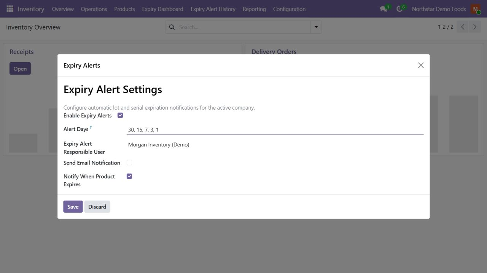
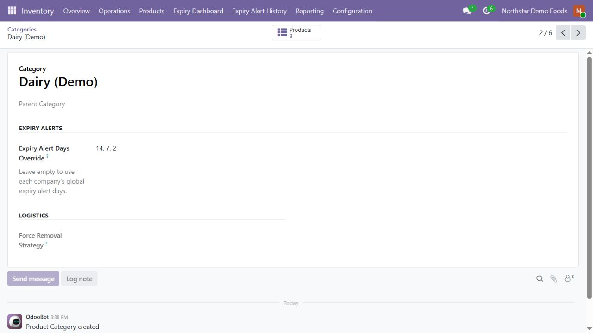
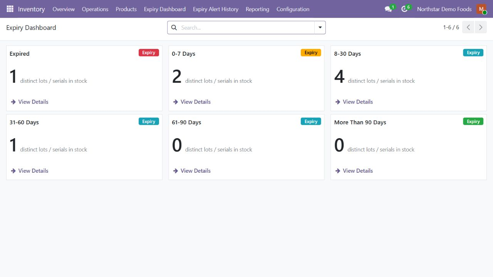
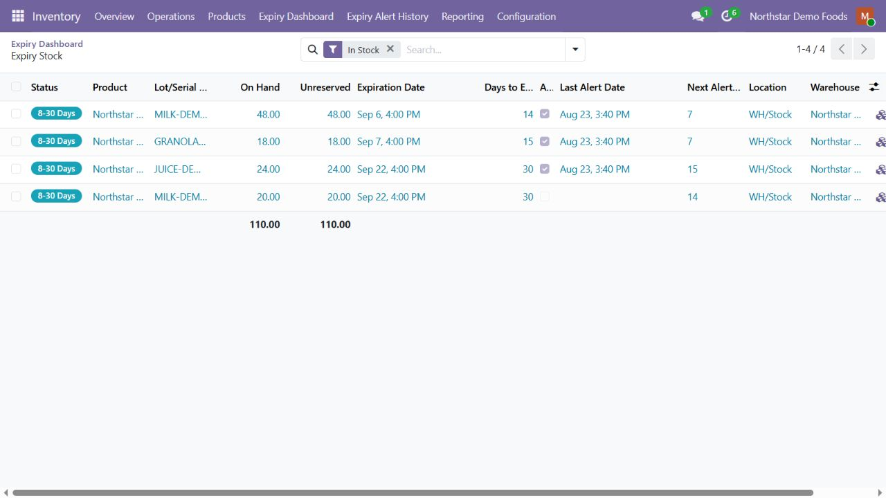
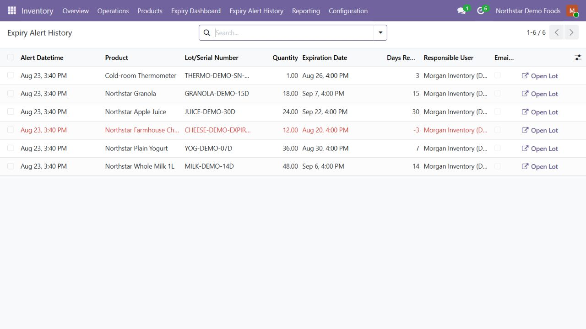
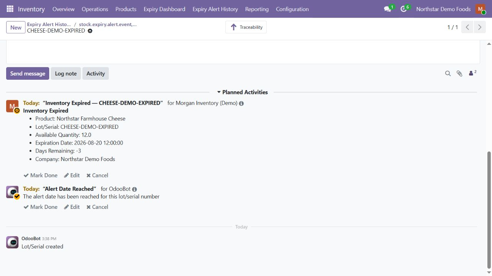

Get the right Odoo user notified at the right expiry checkpoints while relevant stock is still on hand.
Odoo 19 CommunityActivities + optional email$9.99
Know about it before it expires
Inventory Expiry Alerts is the lightweight paid companion to the free Expiry Date Dashboard. It adds scheduled notifications without turning expiry visibility into a complex management workflow.
1
Configure checkpoints
Choose global alert days per company, such as 30, 15, 7, 3, and 1 day before expiry.
2
Run the daily check
The scheduled action evaluates dated lots and serials that still have positive stock in internal locations.
3
Open the lot
The responsible user receives a standard Odoo activity linked to the relevant lot or serial.
Current internal stockExpiration dateConfigured thresholdOdoo activityOptional email
Reliable alerts without daily noise
Each applicable checkpoint is recorded so repeated cron runs do not keep creating the same activity or email.
Notification essentials
One configured responsible user per company.
Standard Odoo activities as the primary notification.
Optional standard Odoo email notification.
One optional final notification when stock expires.
Direct investigation from the activity to the lot or serial.
Focused inventory logic
Only positive physical stock in internal locations is considered.
Lots without expiration dates and zero-stock lots are ignored.
Product-category alert days can replace the global schedule.
Company-specific settings and company boundaries are respected.
Alert status complements the free dashboard without redesigning it.
See it in action
Configure company and category schedules, monitor alert status, and investigate every notification from standard Odoo screens.

Company-specific alert settings

Category-specific threshold override

Expiry dashboard overview

Alert status and next threshold

Immutable alert history

Assigned Odoo activity with lot details
Intentionally small
This module is built for proactive awareness. Operational controls remain outside its scope.
Clear product boundary: no delivery blocking, approval workflow, automatic scrap, disposal, returns, stock transfers, advanced FEFO, loss analytics, or warehouse-specific rule engine.
A natural next step from visibility to notification
Install the free Expiry Date Dashboard first, then install Inventory Expiry Alerts, configure each company, and let the daily scheduled check keep the responsible user informed.